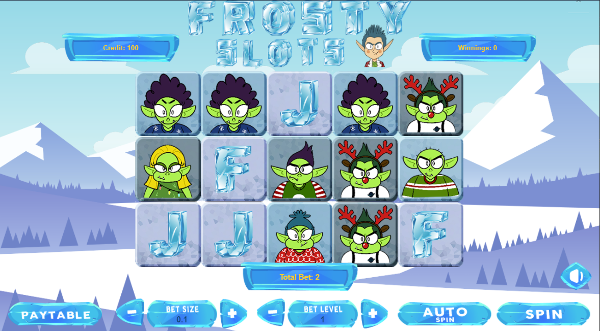
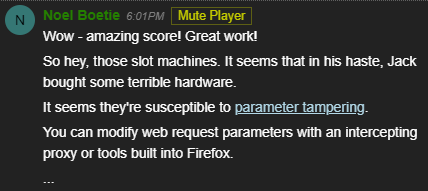
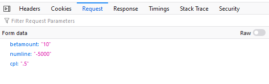
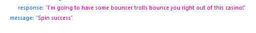
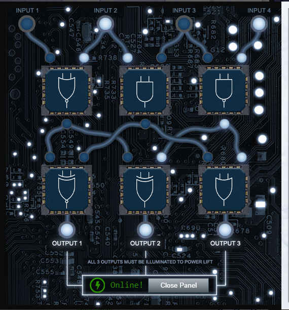

Once you get access to the Frost Tower, check out the slot machines. Noel Boetie, one of the elves, gives you a hint about parameter tampering. He is located in "The North Pole" area outside of Santa's castle near the Logic Munchers Cranberry Pi terminal."
Now that you have the slots open, pop inside FireFox's F12 Developer Console. This is the easiest way to accomplish this challenge in my opinion. You might choose to use Burp or some other proxy, but why do that when you can do everything right in the browser with built-in tools. Open the F12 tools, click on Network, and start looking at the POST requests made to the server. You should see some like this after each spin of the wheel. Change them to something like the image below and start replaying the POSTs. Eventually, the bouncers send you a message through the slot machine API. Personally, I think it would be easier for them to just walk up and be like, "Hey! You have developer tool open! I'm telling on you!" Haha!
This is the bouncer message after fiddling with the paramaters sent with the POST requests on the slot machine.
match the gates appropriately to activate the elevator so you can use it. Here's the solution.
